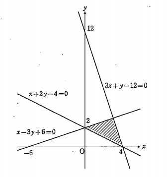
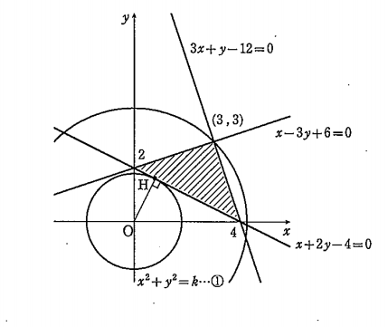

解答・解説2
- (1)
- \(x-3y+6≧0\)
- \(-3y≧-x-6\)
- \(y≦\frac{1}{3}x+2 ―①\)
- \(3x+y-12≦0\)
- \(y≦-3x+12 ―②\)
- \(x+2y-4≦0\)
- \(2y≦-x+4\)
- \(y≦-\frac{1}{2}x+4 ―③\)
- \(①～③\)より領域\(D\)は下図の斜線部分である。ただし,境界線を含む。
-

- (2)
-
-

\(x^2+y^2=k\cdots ④\)とおく。\((k<0)\)
円の方程式
点\((a,b)\)を中心とし、半径が\(r>0\)である円の方程式は
\((x-a)^2+(y-b)^2=r^2\)
円の方程式より
\(④\)は原点を中心とする半径\(\sqrt{k}\)の円を表す。
ⅰ) \(k\)が最大になるとき
\(④\)が\((3,3)\)を通ればよい。
\(3^2+3^2=k\)
\(k=18\)
ⅱ) \(k\)が最小になるとき
\(④\)が直線\(x+2y-4=0\)と接すればよい。
\(④\)と直線の接点を\(H\)として、その距離を求める。
点と直線の距離
点\(A(x_0,y_0\))と直線\(l:ax+by+c=0\)の距離\(d\)は,
\(d=\cfrac{|ax_0+by_0+c}{\sqrt{a^2+b^2}}\)
\(OH=\cfrac{|0+2\cdot0-4|}{\sqrt{1^2+2^2}}=\cfrac{4}{\sqrt{5}}\)
よって,\(\sqrt{k}=\cfrac{4}{\sqrt{5}}\)
\(k=\cfrac{16}{5}\)
ここで,上図より直線\(OH\)は,直線\(x+2y-4=0\)と垂直に交わっている。
2直線が垂直に交わる条件
2直線\(y=m_1x+n_1とy=m_2+n_2\)が
垂直に交わる(直行する)ための条件は,
\(m_1m_2=-1\)
である。
つまり,直線\(x+2y-4=0\)の傾きが\(-\cfrac{1}{2}\)なので,
直線\(OH\)の傾きを\(m\)とすると,
\(-\cfrac{1}{2}m=-1\)
\(m=2\)
直線\(OH\)は原点を通るため,式は\(y=2x\)となる。
点\(H\)の座標は,直線\(y=2x\)と直線\(x+2y-4=0\)の交点である。
\(y=2x\)を\(x+2y-4=0\)に代入する。
\(x+2\cdot(2x)-4=0\)
\(5x=4\)
\(x=\cfrac{4}{5}\)
\(y=2x\)
\(y=2\cdot\cfrac{4}{5}\)
\(y=\cfrac{8}{5}\)
よって、点\(H(\cfrac{4}{5},\cfrac{8}{5})\)となる。
以上より,
\(
\left\{
\begin{array}{ll}
最大値 18 (x=3,y=3) \\
最小値 \cfrac{16}{5} (x=\cfrac{4}{5},y=\cfrac{8}{5})\\
\end{array}
\right.
\)